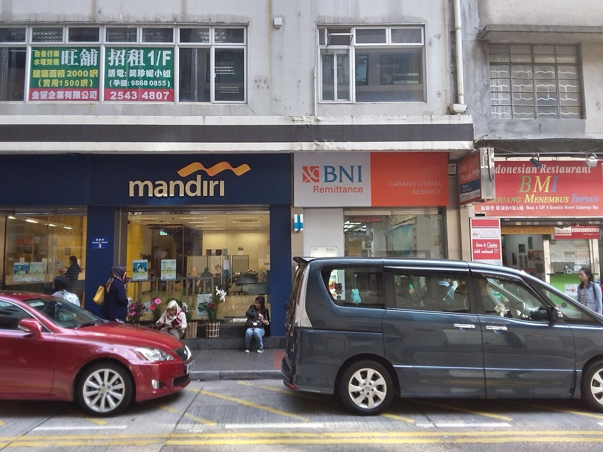
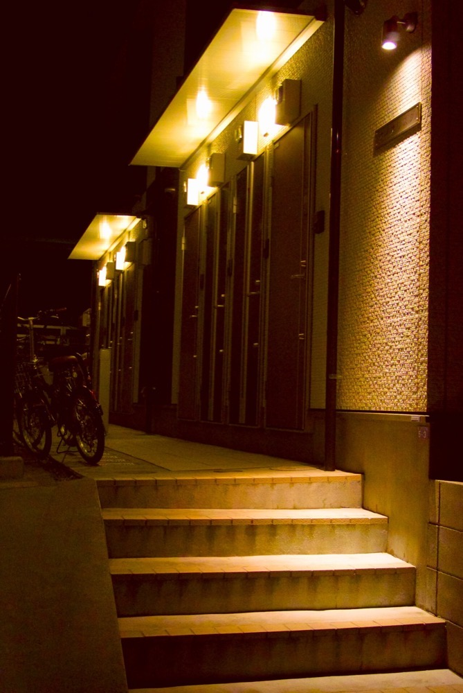

外国人材を雇用する企業に、社員寮の提供と運営を月額で販売する。寮に入居した外国人材には、母国への送金・携帯電話の回線・銀行口座の開設の支援を一括で提供する。紹介の売上は採用時の1回限りだが、生活インフラは在留している間、毎月の売上になる。
在留外国人数は2025年末に412万5,395人で、前年比9.5%増である1。2026年6月末には428万1,026人に増えた2。外国人労働者数は2025年10月末に257万1,037人である4。
世界銀行の統計では、日本からの個人送金の支払額は2025年に71.7億ドルである。2015年の40.0億ドルから10年で約1.8倍になった3。この値は正規の経路の送金で、在留外国人以外の送金も含む。
推計 生活インフラの国内市場
寮 ＝ 外国人労働者257万1,037人 × 寮と社宅の利用率30% × 月3万円 × 12か月 ≒ 2,777億円
通信 ＝ 在留外国人412万5,395人 × 契約率90% × 月3,000円 × 12か月 ≒ 1,337億円
送金 ＝ 71.7億ドル × 150円 × 手数料と為替差2.5% ≒ 269億円
合計 約4,380億円。利用率30%・月3万円・契約率90%・月3,000円・1ドル150円・2.5%は本ページの仮定値である。家賃保証と口座の関連の売上は含めていない。
世界の国際送金の市場規模は、本ページで最新の一次情報を確認できなかった。日本からの送金71.7億ドル3は、送金の受け手の国から見ると一部に過ぎない。

| 年 | 変化 | 数値 |
|---|---|---|
| 2017年6月 | 法務省の委託による外国人住民調査 | 過去5年に住居を検索した人の39.3%が外国人であることを理由に入居を断られ、41.2%が日本人の保証人がいないことを理由に断られた5 |
| 2025年 | 日本からの個人送金 | 71.7億ドル、2024年の60.7億ドルから18%増3 |
| 2025年末 | 在留外国人数 | 412万5,395人で初めて400万人を超えた。特定技能は39万296人で37.2%増1 |
| 2026年1月 | 育成就労の運用方針の閣議決定 | 2027年4月から2年間で43万人、特定技能と合わせ最大123万人7 |
| 2026年6月末 | 在留外国人数 | 428万1,026人で最多を更新2 |
| 2026年7月 | 外国人向け生活支援の大手の資金調達 | 約30億円を調達し、M&Aなどの戦略投資に充てると公表した6 |
在留外国人は2025年に35万人以上増えた1。住居の確保は入居を断られる経験が4割に上り5、受入れ企業が寮を用意する理由になる。2027年4月から育成就労が始まり、受入れ企業は住居の確保を含めた支援を求められる。人数の増加と企業の負担の増加が同時に起きる。
| 領域 | 事業者 | 動き |
|---|---|---|
| 生活支援の一括提供 | グローバルトラストネットワークス | 家賃保証から始め、住まい・通信・クレジットカード・就労支援を提供する9。累計の利用者と支援者は70万人超、最大25言語で相談に対応する。2026年7月に約30億円を調達した6 |
| 送金 | 銀行と資金移動業者 | 海外の送金大手と国内の資金移動業者が在留外国人向けに提供する。各社の取扱額は確認できなかった |
| 通信 | 携帯電話会社と格安SIMの事業者 | 外国人向けの多言語の窓口を設ける事業者がある。外国人の契約数は確認できなかった |
| 寮 | 受入れ企業の自社保有、不動産会社のサブリース | 外国人材向けの寮を専業とする事業者の規模は確認できなかった |
生活支援の一括提供では、上記の事業者が先行している。売上は確認できなかった。本案は寮を起点とし、受入れ企業から寮費を受け取る点が異なる。
首位の条件 首位を狙えるのは、外国人材向けの社員寮の運営である。条件は3つである。①受入れ企業と法人契約を結び、寮費を企業から前月に受け取ること。空室の負担を企業に負わせる契約にする。②寮の入居時に通信と送金と口座の手続きを同時に行い、入居者1人当たりの月額の売上を増やすこと。③紹介会社と登録支援機関から入居者の紹介を受ける仕組みを持つこと。
地域は製造業と食品工場の多い1つの県に絞る。最初は既存のアパートを一括で借り上げ、家具と家電を備えて寮として企業に貸す。送金と通信は、既存の資金移動業者と通信事業者の代理店として始める。

| 用途 | 金額 | 検証すること |
|---|---|---|
| アパート2棟60床の借上げの敷金、家具、家電 | 1,500万円 | 企業が1床当たり月4万円を払うか |
| 多言語の管理担当2名、営業1名、管理1名 12か月 | 1,600万円 | 管理担当1名で何床を運営できるか |
| 送金と通信の代理店契約、入居者の管理システム | 300万円 | 入居者のうち送金と通信を契約する比率 |
| 運転資金 | 600万円 | 寮費の前月払いを企業が受け入れるか |
| 合計 | 4,000万円 |
| 月 | 計画 |
|---|---|
| 1〜3月目 | 県内で外国人材を10人以上雇用する企業30社に、寮の確保の状況と現行の費用を聴取する。紹介会社と登録支援機関5社と提携する |
| 4〜6月目 | アパート2棟を借り上げ、企業3社と寮の法人契約を締結する。契約期間は2年、寮費は前月払いとする |
| 7〜12月目 | 60床を満床にする。入居時に通信と送金の契約を案内する。2棟目以降の借上げを企業の契約数に合わせて追加する |
1年目の判定基準は、60床の稼働率90%以上と、入居者の50%以上が通信または送金を契約することである。
| 段階 | 資金 | 金融機関 | 条件 |
|---|---|---|---|
| 創業時 | 新規開業の融資 | 日本政策金融公庫 国民生活事業 | 限度7,200万円8。敷金と家具の費用に充てる |
| 1〜3年目 | 企業からの寮費の前月払い | 受入れ企業 | 2年の法人契約で空室の負担を企業に負わせる。前月払いで運営費を先に賄う |
| 3〜5年目 | 家具と家電のリース、当座貸越 | リース会社、地銀 | 床数の増加に合わせて初期費用をリースに切り替える |
| 5年目以降 | 寮の取得の不動産融資、資本性劣後ローン | 地銀、日本政策金融公庫 中小企業事業 | 企業との長期契約がある寮は、建物を担保に取得する。資本性ローンの限度は15億円10 |
5年目以降に寮を自社で取得すると、資金源は資産を担保に借りる型Bに近づく。寮の取得は長期の法人契約がある物件に限り、型Aの比率を保つ。
| 年目 | 1 | 2 | 3 | 5 | 7 | 10 |
|---|---|---|---|---|---|---|
| 寮の床数 | 60 | 300 | 1,000 | 5,000 | 15,000 | 40,000 |
| 通信と送金の契約者数 | 500 | 3,000 | 10,000 | 50,000 | 150,000 | 400,000 |
| 売上高 億円 | 0.4 | 2 | 6 | 30 | 90 | 250 |
| 営業利益 億円 | -0.2 | 0.1 | 0.5 | 3 | 9 | 25 |
| 累計投資 億円 | 0.2 | 0.8 | 2.5 | 12 | 35 | 90 |
| 借入残高 億円 | 0.2 | 0.7 | 2 | 9 | 25 | 60 |
| 年目 | 1 | 2 | 3 | 5 | 7 | 10 |
|---|---|---|---|---|---|---|
| 寮の床数 | 40 | 150 | 400 | 1,500 | 3,500 | 8,000 |
| 通信と送金の契約者数 | 200 | 1,000 | 3,000 | 10,000 | 25,000 | 60,000 |
| 売上高 億円 | 0.3 | 0.9 | 2.3 | 9 | 20 | 47 |
| 営業利益 億円 | -0.3 | -0.1 | 0.1 | 0.6 | 1.6 | 4 |
| 累計投資 億円 | 0.2 | 0.4 | 1 | 3.5 | 8 | 18 |
| 借入残高 億円 | 0.2 | 0.4 | 0.9 | 3 | 6.5 | 14 |
前提
楽観の10年目は売上高250億円で、目安の1,000億円に届かない。保守では47億円である。1,000億円に届くには、寮だけで約16万床が必要になる。外国人労働者257万人4の約6%に当たる。
第2章の推計では、外国人材向けの寮の市場は約2,777億円で、1,000億円以上の条件を満たす。楽観の10年目の寮の売上192億円は、その約6.9%である。寮を専業とする事業者の規模は確認できず、6.9%で首位になるかは判定できない。
生活支援の一括提供では、累計70万人超の利用者をもつ事業者が先行し、2026年に30億円を調達してM&Aに充てる6。この分野で10年以内に首位を取ることは難しい。
停止する位置は3つある。1つ目は1〜2年目で、企業が空室の負担を受け入れず、自社が空室の費用を負う場合である。2つ目は3〜5年目で、受入れの上限7や景気の後退で企業の外国人材の雇用が減り、寮の解約が続く場合である。3つ目は送金を自社で行う段階で、資金移動業の登録とマネーロンダリング対策の体制が整わない場合である。
| 順 | 国 | 理由 |
|---|---|---|
| 1 | ベトナム・フィリピン・インドネシア・ネパール | 送金の受け手の国である。現地の受取の事業者と提携し、日本からの送金の経路を自社で持つ |
| 2 | 韓国、台湾 | 日本と同じく東南アジアから労働者を受け入れており、寮と生活支援の需要がある |
| 3 | 中東の湾岸諸国 | 外国人労働者の比率が高く、寮と送金の需要が大きい |
送金の経路は国を越えたインフラになりうる。寮は各国の不動産と労働の法令に従う国内事業で、展開には現地の提携先を要する。
| # | 基準 | 判定 | 根拠 |
|---|---|---|---|
| 1 | 50年、魂を燃やし続けられるか | 創業者が判定 | |
| 2 | 10年以内に、国内市場規模1,000億円以上の市場でシェア1位になれるか | △ | 寮の市場は推計約2,777億円で、楽観の10年目に約6.9%となる。専業の上位事業者の規模が不明で首位かは判定できない |
| 3 | 4,000万円で始められ、融資で伸ばせるか | ○ | 借上げ方式なら建物の取得は不要で、初期費用は敷金と家具に限られる。床数の拡大には融資とリースを使う |
| 4 | グローバルなインフラになり得るか | ○ | 送金の経路は日本と送出国を結ぶ国際的な仕組みになりうる。寮は国内事業に留まる |
| 5 | 営業力が最初の売上に直接結びつくか | ○ | 寮の法人契約は受入れ企業への営業で決まる。通信と送金は個人向けで、法人営業の効果は間接的である |
| 6 | 同じビジョンを共有する仲間を誘える事業か | 創業者が判定 | |
| 7 | 本業が早く現金を生み、返済と出資の原資になるか | ○ | 寮費は前月払いで毎月入る。粗利率は20%で、床数が増えるまで利益は小さい |
| 8 | 投資先を束ねる群の中核になれるか | ◎ | 入居者が送金・通信・保証・教育の各事業の共通の顧客になり、受入れ企業が紹介事業の顧客になる |
| 9 | 成長の資金源がA・B・Cのどれに当たるか | A | 企業からの寮費の前月払いで運営費を先に賄う。寮を取得する段階ではBに近づく |
1. 空室と解約 借上げの賃料は固定で、企業が契約を解除すると空室の費用を自社が負う。対策は2年の法人契約と中途解約の違約金を定め、1社への依存を床数の20%以下にすることである。景気の後退で複数の企業が同時に解約する場合は潰せない。
2. 送金の規制とマネーロンダリング対策 送金を自社で行うには資金移動業の登録が必要で、本人確認と取引の監視の体制を要する。不備があれば業務改善命令や登録の取消しを受ける。対策は登録までの期間、既存の資金移動業者の代理店として送金を提供することである。
3. 入居者からの搾取の批判 寮費や手数料が高いと、受入れ企業と組んで外国人材から利益を得ていると批判される。対策は寮費と手数料を入居者の母語で開示し、相場との比較を示すことである。
4. 受入れ人数の政策による変動 受入れの上限は政府が設定する7。上限の引き下げや分野の停止は、寮の需要の減少に直結する。1社の努力では潰せない。
5. 先行者と大手の参入 生活支援の先行者は2026年に30億円を調達し、M&Aを進める6。通信会社や銀行が外国人向けの一括の商品を出すと、通信と送金の契約者を確保できない。対策は寮という物理的な接点を先に押さえることである。